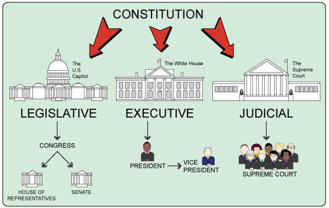
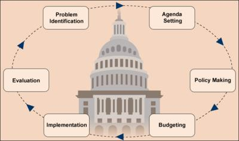

Constitution: Civics education should be easily able to explain the rules of our democracy.
Citizenship: Civics education should fully be able to explain citizen's rights, responsibilities, and duties in our democracy.
Three Branches: Civics education should be able to teach the three branches of the government (The Legislative, Executive and Judicial Branches) and how they make, enforce and interpret the laws of our land.

Political Process: Civics education should be able to inform students on how political campaigns are run, how government officials are elected, and how laws are enacted.
